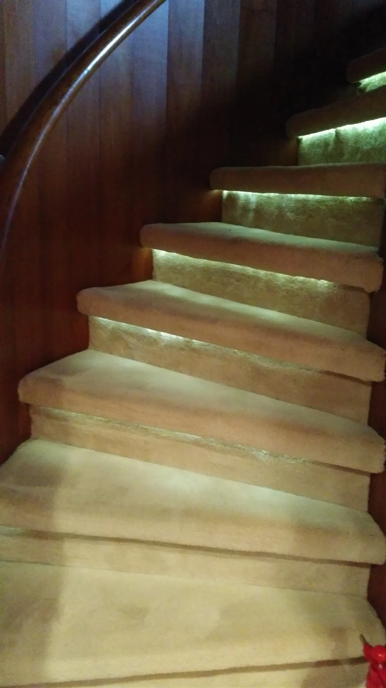

Tratamientos profesionales para superficies que requieren algo más que limpieza.
Cada trabajo parte del material, el estado de la superficie y el resultado que se quiere conseguir. Adaptamos el proceso para obtener un acabado cuidado y duradero.
 01
01
Suelos y escaleras
Recuperamos el aspecto del pavimento mediante tratamientos profesionales orientados a mejorar brillo, uniformidad y presencia.



02Moquetas, alfombras y tapicerías
Limpieza profunda de tejidos para retirar suciedad acumulada y mejorar la higiene y la presencia visual de cada superficie.
 03
03
Limpieza profesional de cristales
Mantenimiento y limpieza de ventanales, cristaleras y superficies acristaladas, incluyendo intervenciones con medios de elevación cuando el trabajo lo requiere.
 04
04
Impermeabilización de cubiertas y tratamiento de filtraciones
Actuaciones destinadas a reforzar puntos sensibles de cubiertas y elementos constructivos frente a filtraciones y entradas de agua.


Un proceso sencillo, claro y profesional.
Valoración
Revisamos la superficie y el tipo de trabajo que necesita.
Propuesta
Definimos el tratamiento y preparamos un presupuesto adaptado.
Ejecución
Realizamos el trabajo con maquinaria y productos adecuados.
Resultado
Revisamos el acabado y dejamos el espacio listo para su uso.
Desde Benidorm a toda la Comunidad Valenciana
Trabajos y desplazamientos programados por Alicante, Valencia y Castellón.